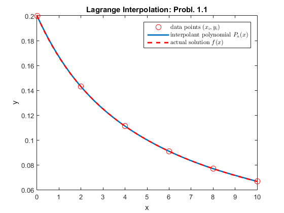
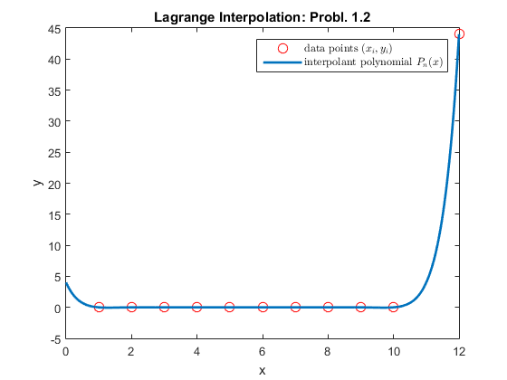
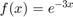
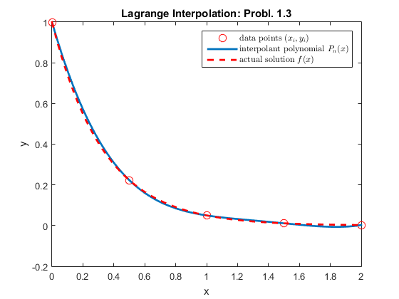

Lab 5 Solution
Lab Instructor: Valeria Barra DUE Tuesday 02-23-2016
Contents
Called Functions
First Problem: Lagrange's Interoplation
Problem 1.1)
Consider the interpolating polynomial for f(x)= 1 / (x+5) with interpolation nodes x=0, 2, 4, 6, 8, 10. Find an upper bound for the interpolation error at x=1 and x=5.
clear all; close all; % the set of data points given in the problem disp('Execution of Probl. 1.1)') xi = [0, 2, 4, 6, 8, 10]; n = length(xi); % the number of data points nodestepsize = (xi(end)-xi(1))/(n-1); f = @(x)(1 ./ (x+5)); yi=f(xi); % the domain needed for plotting x=linspace(xi(1),xi(end),101); % stepsize of the domain is calculated to figure out which points to select for the error domstepsize=(x(end)-x(1))/(length(x)-1); % call to the function p= LagrangeInterpolation(xi,yi,x); figure; % starts a new figure plot(xi,yi,'or','MarkerSize',8); hold on plot(x,p,'Linewidth',2) hold on plot(x,f(x),'--r','Linewidth',2) title('Lagrange Interpolation: Probl. 1.1') xlabel('x') ylabel('y') legend({'data points $(x_i,y_i)$','interpolant polynomial $P_n(x)$','actual solution $f(x)$'},'interpreter','latex') indexfor1 = ((1 - x(1))/domstepsize) +1; indexfor5 = ((5 - x(1))/domstepsize) +1; Err_x1 = abs(p(indexfor1) - f(x(indexfor1))); % the error at x = 1 Err_x5 = abs(p(indexfor5) - f(x(indexfor5))); % the error at x = 5 disp(['The error at x = 1 is ',num2str(Err_x1)]) % now we calculate the max of the theoretical error Fsym = sym(f); DerF = diff(Fsym,n); MaxDerF = max(abs(double(subs(DerF,x)))); MaxError = ((nodestepsize^(n+1))*MaxDerF)/(4*(n+1)); % this is the formula for the bound of error with equispaced points % to calculate the error at a specific point, I use a symbolic expression syms y; E = 1; for i=1:length(xi) E = E.*(y-xi(i)); end ErrAt1 = abs(double(subs( E,{y},1)))*(MaxDerF/factorial(n)); ErrAt5 = abs(double(subs( E,{y},5)))*(MaxDerF/factorial(n)); disp(['The estimate of the theoretical error at x = 1 is ',num2str(ErrAt1)]) disp(['The error at x = 5 is ',num2str(Err_x5)]) disp(['The estimate of the theoretical error at x = 5 is ',num2str(ErrAt5)]) if ((Err_x1 <= ErrAt1) && (Err_x5 <= ErrAt5)) disp('We are below the theoretical error. Yay!') end
Execution of Probl. 1.1) The error at x = 1 is 0.0002331 The estimate of the theoretical error at x = 1 is 0.012096 The error at x = 5 is 3.33e-05 The estimate of the theoretical error at x = 5 is 0.00288 We are below the theoretical error. Yay!
Problem 1.2)
Find P(0), P(x) is the degree 10 polynomial that is zero at x=1, 2, 3, …, 10 and satisfies P(12)=44.
disp('Execution of Probl. 1.2)') xi = linspace(1,10,10); yi = zeros(1,10); xi = [xi,12]; yi = [yi,44]; x = linspace(0,xi(end),1000); % domain p = LagrangeInterpolation(xi,yi,x); figure; % starts a new figure plot(xi,yi,'or','MarkerSize',8); hold on plot(x,p,'Linewidth',2) title('Lagrange Interpolation: Probl. 1.2') xlabel('x') ylabel('y') legend({'data points $(x_i,y_i)$','interpolant polynomial $P_n(x)$'},'interpreter','latex') P0=p(1); % the first entry of the vector P corresponds to P(0) disp(['P(0) is = ',num2str(P0)])
Execution of Probl. 1.2) P(0) is = 4
Problem 1.3)
Consider using 5 equi-spaced points on [0,2] to approximate 
disp('Execution of Probl. 1.3)') xi = linspace(0,2,5); n = length(xi); % the number of data points nodestepsize = (xi(end)-xi(1))/(n-1); f = @(x)(exp(-3.*x)); yi = f(xi); x = linspace(xi(1),xi(end),101); % domain domstepsize=(x(end)-x(1))/(length(x)-1); % stepsize for the domain p = LagrangeInterpolation(xi,yi,x); figure; % starts a new figure plot(xi,yi,'or','MarkerSize',8); hold on plot(x,p,'Linewidth',2) hold on plot(x,f(x),'--r','Linewidth',2) title('Lagrange Interpolation: Probl. 1.3') xlabel('x') ylabel('y') legend({'data points $(x_i,y_i)$','interpolant polynomial $P_n(x)$','actual solution $f(x)$'},'interpreter','latex') indexfor02 = ((0.2 - x(1))/domstepsize )+ 1; P02= p(indexfor02); f02= f(x(indexfor02)); Err = abs(P02 - f02); disp(['The error at x=0.2 is = ',num2str(Err)]) % now we calculate the max of the theoretical error Fsym = sym(f); DerF = diff(Fsym,n); MaxDerF = max(abs(double(subs(DerF,x)))); MaxError = ((nodestepsize^(n+1))*MaxDerF)/(4*(n+1)); % this is the formula for the bound of error with equispaced points % to calculate the error at a specific point, I use a symbolic expression syms y; E = 1; for i=1:length(xi) E = E.*(y-xi(i)); end ErrAt02 = abs(double(subs( E,{y},0.2)))*(MaxDerF/factorial(n)); disp(['The estimate of the theoretical error at x = 0.2 is ',num2str(ErrAt02)]) if (Err <= ErrAt02 ) disp('We are below the theoretical error. Yay!') end
Execution of Probl. 1.3) The error at x=0.2 is = 0.022857 The estimate of the theoretical error at x = 0.2 is 0.22745 We are below the theoretical error. Yay!